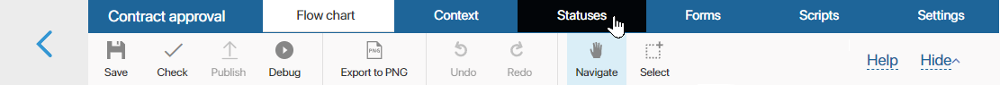
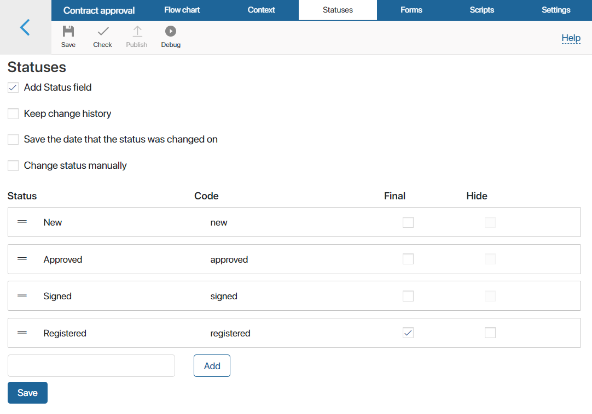
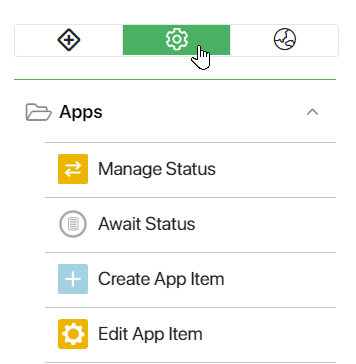
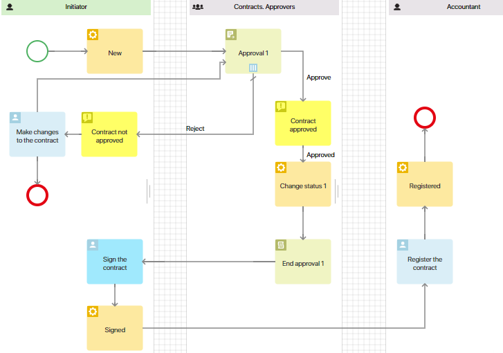
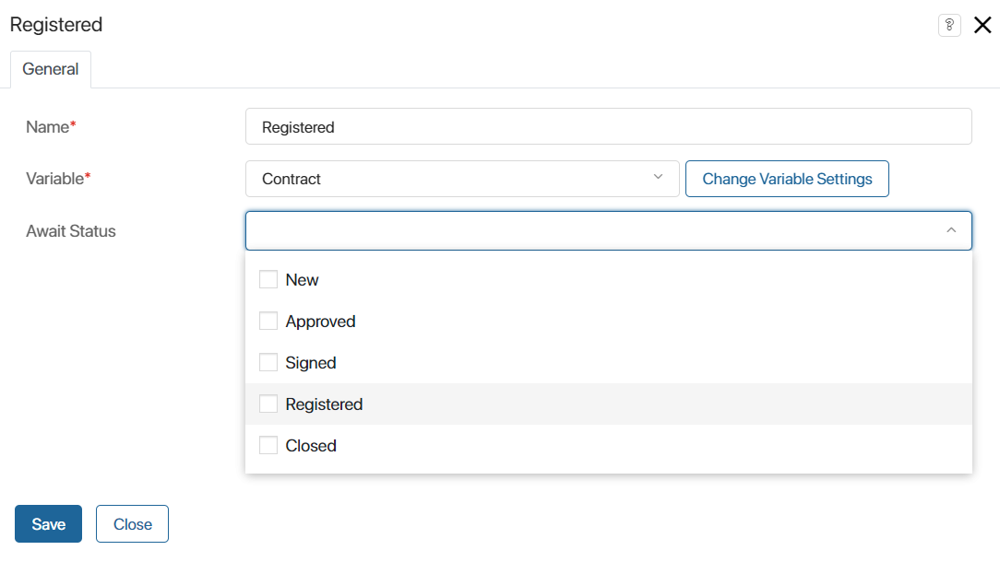
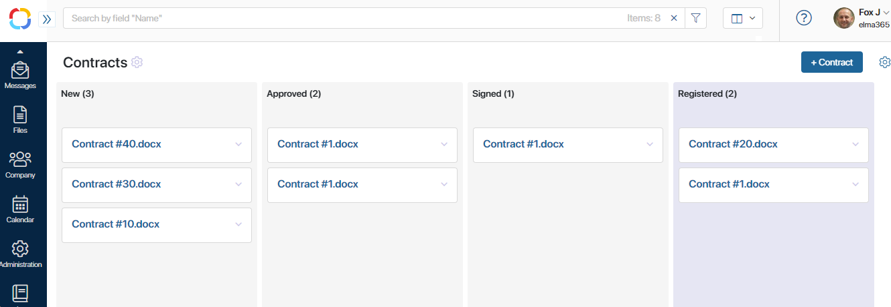
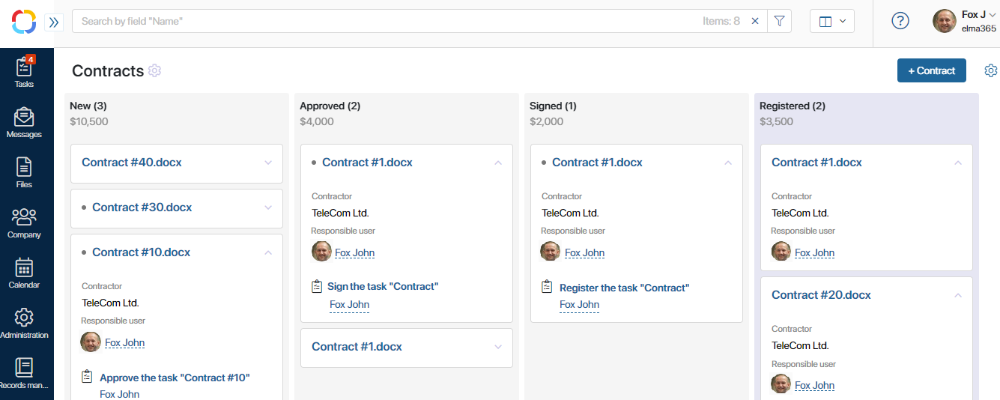

After creating your first process, you can configure additional settings. They let you track the current status of a business process and its progress.
For example, for the Contract approval business process, you can check how many contracts have been approved, signed and registered.
Step 1. Create statuses
Begin with setting up statuses, for example, New, Approved, Signed, and Registered.
To do this, go to the Statuses tab in the process designer. The switch is located in the top menu.

Check the Add Status field box, then enter the status names. Do not forget to indicate the final status.

Step 2. Add statuses to the process
Return to the process diagram. Select the System elements tab on the right toolbar and drag the Manage Status element onto the process diagram.

Place the element on the diagram where the contract should change its status. Suppose a new step was added to the process we created earlier: Sign the contract. The document goes to the registration only after this step is completed. Place the statuses in the following places of the process:
- New status after the Start event.
- Approved status after Approval.
- Signed status after Sign the contract.
- Registered status after Register the contract. This is the final status.

Double-click on a status change element on the canvas to configure the settings. Choose the appropriate status for each stage.

Save and publish the process. Now the status of the contract changes automatically. Depending on what stage the process is at, the contract will take on one status or another.
Step 3. Set up Kanban view
The Kanban board in BRIX is a business process monitoring tool. As the business process is being executed, the contract automatically moves across the board, and you can easily see exactly what stage of processing it is currently in.
Go to the Contracts app page. After you have added statuses to the process, all the contracts are shown on the Kanban board.

Each column of the Kanban board corresponds to a specific contract status. The columns representing final statuses have a different background color.
Items on the board can be expanded to view current tasks. To do this, click the gear icon in the top right corner and select Board settings in the menu. In the provided window, check the Show tasks and Expand item boxes. Also, here you can select other contract properties to be displayed, for example, the contractor and the user in charge.
The image below demonstrates what a configured Kanban board may look like:

If a task in a business process has a deadline that has not been met, a red dot appears on the board item, and the task name is highlighted red. You can immediately see how many tasks are overdue.
Found a typo? Select it and press Ctrl+Enter to send us feedback